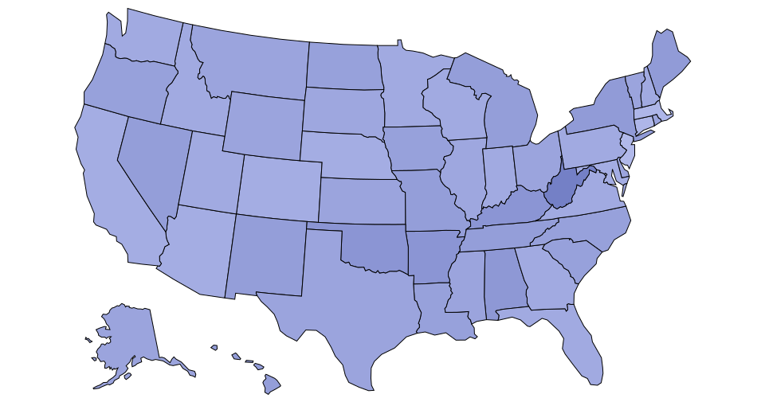
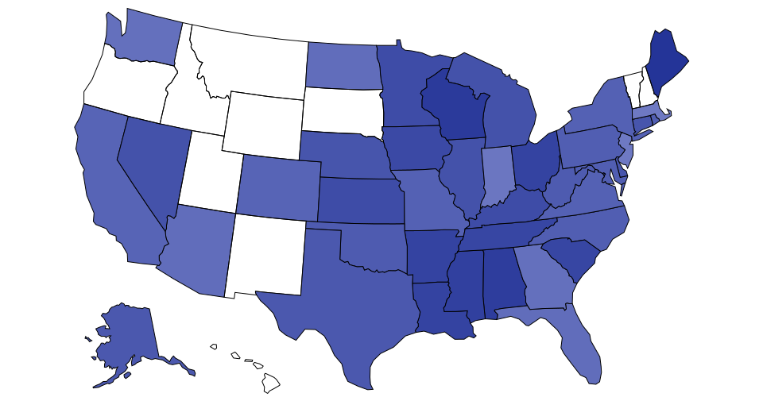

Server side map making
A interpretation of @mbostock's Command Line Cartography
I got a little sidetracked today thinking about the Star project. I know it's way early, but I thought showing this technique might help us before that. I also, as usual, am a little freaked out by the possibility of election coverage and this is the technique I last used.
What I'm showing here is an example of how to make SVG maps on a local workstation, or server if you have one set up for it, instead of rendering them in the client. This has the advantage of being nothing more than a standard image tag in CUE.
These maps show data downloaded from the U.S. Department of Education. The specific data I'm showing is the percentage of 8th-grade students who scored below Basic in NAEP reading by race. To keep this simple I used the first sheet which included white, black and hispanic. Using D3 directly from the command line, I was able to merge this data with a shapefile from naturalearthdata.com. I picked the smallest, least detailed, version because this is a test.
Percentage of white students below the Basic NAEP treshold
No Data
10%
50%
For a one-off, the advantage here is that a developer can do this completely on the side without worrying at all what happens if JS breaks, or ads do something odd, or ads take forever to load, or the client doesn't support fetch(), or whatever. The coolness gets even better when you want to show a second or third map of basically the same thing, but with a different column of data.
Percentage of hispanic students below the Basic NAEP treshold

No Data
10%
50%
You can make a whole bunch of them by only changing the last step. Another advantage here is the reader isn't required to do anything other than passively scroll down and we get responsiveness for free.
Percentage of black students below the Basic NAEP treshold
No Data
10%
50%
When I do these I use a Makefile because it keeps a log of what I did and lets me recreate it in the future. I tarballed this one to show how I set them up. I kept most all of them as individual files so you can see the progression, but the d3 commands work with pipes too. Here is a list of the npm packages, all written by Mike Bostock, you would need to have globally to run the file:
- d3
- d3-dsv
- d3-geo-projection
- ndjson-cli
- shapefile
- topojson
This sort of thing is great for standalone projects, but it's not day-to-day fast. I had to go through the tutorial again, because I always do, and I was able to do this in less than a day. It's intense though and I didn't have to clean any data. If we wanted to set up a server with Node on it you could define some rules and make a mini-app or something. We never took it that far at the paper. For election maps, this technique really shines. Once you do the hard work of merging AP data with Tiger Census files, making a map for every race in every state by county is very easy to do.
Happy weekend everyone!